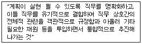
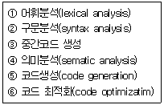
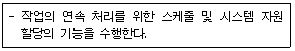

사무자동화산업기사 (2006-03-05 기출문제)
1과목: 사무자동화 시스템
1. 다음 중 무선인터넷 표준 포로토콜에 해당하는 것은?
- LAN
- TCP/IP
- WAP
- MHS
(정답률: 47%)

2. 다음 중 일괄처리 시스템과 가장 관계없는 것은?
- 오프라인 시스템에서 사용한다.
- 적절한 작업제어언어(JCL)를 제공한다.
- 유사한 성격의 작업을 한꺼번에 모아서 처리하는 시스템이다.
- 결과를 즉시 받아 볼 수 있어 응답시간이 짧다.
(정답률: 72%)
3. 다음 중 사무자동화 추진의 장애 요인과 관계없는 것은?
- 사무자동화 추진 인력의 부족
- 사무자동화에 대한 지식의 부족
- 사무자동화기기의 고도화
- 최고경영자의 인식 부족
(정답률: 67%)
4. 다음의 입력매체 중 광(Optical)센서에 의해서 읽을 수 없는 것은?
- OMR
- MICR
- OCR
- Bar Code
(정답률: 64%)
5. 파일의 자료구주에 근거한 데이터베이스 모델이 아닌 것은?
- 망형 모델
- 관계형 모델
- 계층형 모델
- 이진형 모델
(정답률: 87%)
6. Time sharing에 대한 설명으로 적합하지 않은 것은?
- CPU가 multiprogramming하는 것을 가능하게 한다.
- 사용자 관점에서 프로세서를 일정한 주기로 번갈아 점유하는 것을 말한다.
- 병렬처리와 같은 말이다.
- 프로세서가 여러 사용자 프로그램을 처리함에도 불구하고 사용자는 자신의 것만을 처리하는 것으로 느낀다.
(정답률: 75%)
7. 통합화된 소프트웨어 패키지(package)에 관한 설명 중 맞지 않는 것은?
- 퍼스널 컴퓨터상에서 표 계산 및 워드프로세스 기능 등을 한 개의 프로그램으로 처리할 수 있도록 한 것이다.
- 상호간에 파일을 공용할 수 있도록 한다.
- 처리 도중에 별개의 기능을 사용해서 결과를 결합시켜 사용하기 편리하다.
- 기능이 복잡하여 업무처리에 비효율적이고 비경제적이다.
(정답률: 90%)
8. Man/Machine Interface와 관계없는 것은?
- 입력기술, 출력기술 및 소프트웨어기술과 관련된다.
- 인간과 기기가 상호 의사전달이 가능할 수 있도록 하기 위한 기능이다.
- 입력 및 표시장치 등을 통하여 가능하다.
- 기억장치 및 중앙처리장치를 통하여 가능하다.
(정답률: 75%)
9. 다음 중 OA의 기본적인 요소기술과 가장 관계가 없는 것은?
- 정보처리기술
- 통신기술
- 정보의 축적 및 검색기술
- 정보의 암호화 및 복호화기술
(정답률: 77%)
10. 다음 중 OA기기의 통합운용을 촉진시킨 가장 직접적인 요인은?
- 마이크로필름의 발달
- 다중화 시스템의 등장
- 정보검색 기술의 발달
- 근거리 통신망의 발달
(정답률: 56%)
11. 데이터베이스 관리 시스템(DBMS)을 구성하여 관리하게 함으로써 얻는 장점이 아닌 것은?
- 데이터의 중복 배제
- 데이터의 일관성 유지
- 데이터의 회복성 복잡
- 데이터의 무결성 유지
(정답률: 82%)
12. 다음 중 액세스 방법이 다른 것은?
- 자기디스크
- 자기코어
- 자기드럼
- 자기테이프
(정답률: 66%)
13. 사무자동화가 제공해야 할 기능과 관계없는 것은?
- 창의적이고 비반복적인 업무처리 기능
- 도큐멘테이션(Documentation) 기능
- 커뮤니케이션(Communication) 기능
- 정보(Information) 기능
(정답률: 76%)
14. 헤드(Head)가 15개, 면당 917개의 트랙(Track), 트랙당 17섹터(Sector)인 하드디스크의 실린더 수는?
- 17
- 255
- 917
- 15589
(정답률: 84%)
15. 일정한 전압을 유지시켜 주면서 순간 정전(Power Failure)에 대비하여 배터리 장치를 갖추어 정전이 되어도 일정 시간동안 전압을 보내주는 장치는?
- AVR
- ADAPTER
- MODEM
- UPS
(정답률: 68%)
16. 다음 중 데이터베이스 관리의 책임이 있는 자는?
- 터미널사용자
- 오퍼레이터
- 데이터베이스관리자
- 응용프로그래머
(정답률: 95%)
17. 의사결정에 필요한 정보를 데이터베이스로부터 검색하여 필요한 분석을 행하고 보기 쉬운 형태로 편집. 출력해 주는 시스템으로 가장 적합한 것은?
- 사무자동화시스템
- 그룹웨어시스템
- 전자출판시스템(DTP)
- 의사결정지원시스템(DSS)
(정답률: 74%)
18. 다음 중 신체장애를 유발할 수 있는 사무환경과 관계없는 것은?
- 온도, 소음 등의 작업환경
- 작업공간
- 사무자동화기기의 작업시간
- 사무자동화기기간의 비호환성
(정답률: 90%)
19. 전자상거래와 전통적인 상거래에 대한 내용 중 전자상거래에 해당하는 것은?
- 판매 거점이 가상공간 속에서 일어난다.
- 기업중심의 일방적인 마케팅이 일어난다.
- 영업사원에 의하여 수요가 파악된다.
- 주로 한정된 지역에서 영업이 일어난다.
(정답률: 84%)
20. 다음 중 사무자동화기기의 발전 방향과 거리가 먼 것은?
- 대형화와 복잡화
- 소형화와 휴대성
- 복합화 또는 통합화
- 기능 및 성능의 향상
(정답률: 86%)
2과목: 사무경영관리 개론
21. 다음 중 사무량 측정방법을 틀리게 설명한 것은?
- 청취법 : 이 방법은 담당자나 그 업무에 정통한 사람에게 문의한 후 사무량을 측정하는 방법
- 시간 관측법: 이 방법은 업무를 직접 관찰하여 소요시간을 측정하는 방법으로 실제로 업무가 이루어지는 현장에서 관찰하는 방법과 실험실 상황에서 관찰하는 방법 모두 활용됨
- 요소시간 측정법 : 이 방법은 상위 동작요소를 먼저 ‘기록한다’, ‘파일한다’ 등으로 구분하고 이들에 대하여 미리 표준시간을 확인한다.
- 워크샘플링법 : 이 방법은 사람의 작업, 기계설비의 가동 등 특정기간에 있어서의 시간적 추이, 상황, 특정 사건의 발생률 등을 통계적 확률을 이용하여 파악하는 방법
(정답률: 49%)
22. 사무실 내의 소음 방지 요령 중 틀린 것은?
- 사무실 내에서의 불필요한 대화는 가급적 억제한다.
- 사무실 내에서의 보행시나 사무용 기기 사용시에는 소리가 크게 나지 않도록 사전에 노력한다.
- 바닥 재료는 소음이 적게 나도록 비탄력성인 것을 사용한다.
- 외부 방문객을 가급적 사무실에서 만나지 않도록 사무실 가까이에 공용 응접실을 마련한다.
(정답률: 85%)
23. 다음 중 전산시스템을 보호하기 위한 허용온도의 범위로 적합한 것은?
- -10 ~ 0
- 0 ~ 10
- 16 ~ 28
- 25 ~ 42
(정답률: 84%)
24. 힉스(Hicks)의 사무업무 내용에 의한 분류가 아닌 것은?
- 기록의 보존
- 기록과 보고서의 준비
- 커뮤니케이션
- 정보의 검색과 가공
(정답률: 55%)
25. 프로그램저작권에 대한 설명으로 틀린 것은?
- 프로그램저작권은 프로그램이 창작된 때로부터 발생한다.
- 프로그램저작권은 그 프로그램이 공표된 다음 연도부터 50년간 존속한다.
- 프로그램 저작자는 그 프로그램에 자기의 설명을 표시할 수 있다.
- 프로그램저작자는 그 프로그램을 공표하여야만 저작권자의 권리를 가진다.
(정답률: 67%)
26. 다음 중 사무계획 수립 절차에 속하지 않는 것은 ?
- 시정조치
- 정보의 수집
- 최종안의 선택
- 사무의 목적 및 목표의 명확화
(정답률: 63%)
27. 사무량을 측정하기에 부적당한 사무는?
- 일상적으로 일정한 처리방법으로 반복되는 사무
- 상당기간 내용적으로 처리방법이 균일하여 변동이 별로 없는 사무
- 성과 또는 진행상황을 수치화하여 일정단위로서 계산할 수 있는 사무
- 조사기획과 같은 비교적 판단 및 사고력이 요구되는 사무
(정답률: 82%)
28. 다음 중 문서관리의 기본원칙이 아닌 것은?
- 표준화
- 전문화
- 자동화
- 분산화
(정답률: 71%)
29. 사무직업의 효율화를 기하기 위해서는 절차, 서식, 작업 시간을 단축하거나 간소화해야 하는데 다음 사항 중 사무 간소화에 해당하지 않는 것은?
- 본질적이 아닌 작업을 제거한다.
- 사무작업에서 불필요한 단계나 복잡성을 제거한다.
- 사무작업 속도를 증가시켜 종래보다 많은 일을 한다.
- 작업의 사무중복을 최소화 시킨다.
(정답률: 88%)
30. 사무관리의 기능에 포함되지 않는 것은?
- 작업 감사기능
- 연결기능
- 관리기능
- 정보기능
(정답률: 57%)
31. 다음 중 사무작업에서 사무동작연구의 분석 방법은?
- 샘플링(sampling)
- 표준규격(standard norm)
- 서블릭(therblig)
- 등급별(ranking)
(정답률: 57%)
32. 다음 중 정보에 관련된 설명으로 틀린 것은?
- 정보는 생산 활동을 지배하는 기본요소 중 하나이다.
- 정보는 사실 내지 자료에 지적인 처리를 가하여 얻어진 지식이다.
- 정보는 자료에 특정 의미가 주어진 것으로서 직접 행동에 영향을 미친다.
- 사무는 경영의 정보를 행동을 결합시키는 과정이 될 수 없다.
(정답률: 83%)
33. 자료의 수집방법에 해당하지 않은 것은?
- 납본에 의한 방법
- 상부의 지시에 의한 방법
- 과제부여에 의한 방법
- 교환에 의한 방법
(정답률: 65%)
34. 정보관리 및 사무관리의 설명으로 가장 거리가 먼 것은?
- 정보관리는 정보를 신속 정확하게 제공하는 것이나 사무관리는 지정한 기일, 방법으로 작성하는 것이다.
- 사무관리의 범위가 정보관리의 범위보다 넓다.
- 사무관리는 일상 업무를 처리하는 보고서를 작성하는 반면에 정보관리는 경영정보시스템의 도입으로 데이터베이스를 구축하는 것도 포함된다.
- 경영활동의 의사결정을 지원하는 것이 정보관리이고 사무처리방법의 합리화 및 시스템화는 사무관리이다.
(정답률: 75%)
35. 다음 중 사무표준화를 통하여 얻을 수 있는 기대효과가 아닌 것은?
- 관리자의 관리활동을 편리하게 해준다.
- 관리자가 직원들에 대한 감독시 통제를 더욱 철저하게 할 수 있다.
- 부서별로 평가기준의 통일을 기할 수 없다.
- 사무원의 생산성 향상에 도움이 된다.
(정답률: 66%)
36. Ticker System, Game up System 등은 사무관리의 부문 중 어떤 부문의 관리수단 체계를 말하는가?
- 사무계획
- 사무조직
- 사무조정
- 사무통제
(정답률: 55%)
37. 다음은 관리의 기능 중 어느 것을 설명한 것인가.

- 조직(organizing)
- 사무조직(coordinating)
- 지시(directing)
- 통제(controlling)
(정답률: 48%)
38. 다음 중 폐기 대상의 자료로 적합한 것은?
- 자료로서 관리할 필요가 있는 자료
- 1본의 복사본을 소장하고 있는 자료로서 열람빈도가 적은 자료
- 활용이 요구되는 자료
- 당해 자료기관의 장이 소장할 필요가 없다고 인정하는 자료
(정답률: 84%)
39. Zisman의 사무자동화의 정의와 관계없는 것은?
- 통신기술
- 컴퓨터기술
- 행동과학
- 복합기술
(정답률: 72%)
40. 다음 중 문서보관방식 중 사무처리의 전문화가 가장 용이한 제도는?(문제오류로 모두 정답 처리한 문제입니다. 여기서는 1번을 정답 처리 합니다.)
- 특수관리제
- 집중관리제
- 분산관리제
- 분산적 집중관리제
(정답률: 83%)
3과목: 프로그래밍 일반
41. Top-down Parser에 해당하는 것은?
- Shift/Reduce Parser
- LR Parser
- Recursive Descent Parser
- Precedence Parser
(정답률: 55%)
42. 순서제어에서 두 가지의 수행 경로에 있는 일련의 문장들 중 하나가 선택되어 수행되는 구조는?
- 합성
- 선택
- 반복
- 무한
(정답률: 79%)
43. 자료 객체의 별명(alias)에 간한 설명으로 옳지 않은 것은?
- 자료 객체는 생존기간 중 여러 별명을 가질 수 있다.
- 일반적으로 별명은 프로그램의 이해를 매우 어렵게 한다.
- 자료 객체가 여러 가지 별명을 갖는 경우 프로그램의 무결점 검증이 쉬워진다.
- 같은 참조환경에서 다른 이름으로 같은 자료객체를 참조할 수 있는 언어의 경우 프로그래머에게 심각한 어려움을 줄 수 있다.
(정답률: 59%)
44. 컴파일러와 인터프리터의 가장 큰 차이점은?
- 프로그램의 번역
- 프로그램의 신뢰도
- 목적프로그램의 생성
- 원시프로그램의 생성
(정답률: 69%)
45. 이항(binary)연산에 해당하지 않는 것은?
- AND
- OR
- XOR
- MOVE
(정답률: 88%)
46. 랜덤편성(Random organization)에 관한 설명으로 옳지 않은 것은?
- 기억공간에 공백이 많아 효율적으로 사용하지 못한다.
- 어떤 레코드에도 빠르게 액세스(access)하여 검색이 가능하다.
- 키(key)변환이 운영체제(Operating System)에 의해 이루어진다.
- 입출력 매체의 종류에 영향을 받지 않는다.
(정답률: 55%)
47. 포인터 자료형에 대한 설명으로 옳지 않은 것은?
- 고급언어에서는 사용되지 않고 저급언어에서 주로 사용되는 기법이다.
- 객체를 참조하기 위해 주소를 값으로 하는 형식이다.
- 커다란 배열에 원소를 효율적으로 저장하고자 할 때 이용한다.
- 하나의 자료에 동시에 많은 리스트의 연결이 가능하다.
(정답률: 71%)
48. 어휘 분석기(lexical analyzer)에 대한 설명으로 옳지 않은 것은?
- 원시프로그램(source program)을 읽어 들여 토큰(token)이라는 문법적 단위(systemic entity)로 분석한다.
- 프로그래머가 프로그램의 설명을 위해 쓴 주석(comment)은 어휘 분석기에서 모두 처리된다.
- 어휘 분석기는 일명 스캐너(scanner)라고도 불리 운다.
- 어휘 분석기는 그 결과물로서 파스트리(parse-tree)를 생성한다.
(정답률: 47%)
49. 구조적프로그램의 기본 구조가 아닌 것은?
- 순차(sequence) 구조
- 조건(condition) 구조
- 일괄(batch) 구조
- 반복(repetition) 구조
(정답률: 70%)
50. C언어의 자료형이 아닌 것은?
- long
- integer
- float
- double
(정답률: 88%)
51. 정규표현(redular expression)에 대한 설명으로 옳지 않은 것은?
- 정규 표현은 정규 언어를 나타내는 수식이다.
- 정규 표현은 유한 길이의 스트링만 나타낼 수 있다.
- 정규 표현은 상태 전이도로 나타낼 수 있다.
- 정규 집합을 형성하는 기초가 된다.
(정답률: 71%)
52. 수학적 수식 “A+B"를 ”+AB"로 표현한 표기법은?
- PREFIX
- INFIX
- SUFFIX
- POSTFIX
(정답률: 74%)
53. 객체의 외부적인 활동을 연산이라는 전제하에서 구현한 것은?
- 속성
- 메시지
- 메소드
- 추상화
(정답률: 76%)
54. 인터프리터와 관계 깊은 언어는?
- FORTRAN
- COBOL
- C
- BASIC
(정답률: 67%)
55. 컴파일러의 컴파일 단계로 옳은 것은?

- ①②④③⑥⑤
- ①②④⑤⑥③
- ①④③⑤⑥②
- ①②③④⑤⑥
(정답률: 62%)
56. 절대로더에서 기능별 수행 주체의 연결이 옳지 않은 것은?
- 기억장소 할당 - 프로그래머
- 연결 - 프로그래머
- 재배치 - 어셈블러
- 적재 - 프로그래머
(정답률: 54%)
57. 객체지향언어(Object-Oriented Programming Language)에서 하나 이상의 유사한 객체(Object)들을 묶어서 하나의 공통된 특성으로 표현한 것을 무엇이라 하는가?
- 클래스(Class)
- 행위(Behavior)
- 사건(Event)
- 메시지(Message)
(정답률: 91%)
58. 주기억장치의 부족한 용량을 해결하기 위해 보조기억장치를 주기억장치처럼 사용하는 기법을 무엇이라고 하는가?
- 인터프리팅 기법
- 가상(Virtual) 기법
- 컴파일러 기법
- 오버레이 기법
(정답률: 83%)
59. 인터럽트의 종류 중 프로그래머에 의해 발생하는 인터럽트로서 보통 입출력의 수행, 기억장치의 할당 및 오퍼레이터와의 대화 등의 작업 수행시 발생하는 것은?
- 입.출력 인터럽트
- 외부 인터럽트
- 기계 검사 인터럽트
- SVC 인터럽트
(정답률: 56%)
60. 운영체제의 제어 프로그램 중 다음 설명에 해당하는 것은?

- 서비스(Service) 프로그램
- 감시(Supervisor) 프로그램
- 데이터 관리(Data Management) 프로그램
- 작업 제어(Job Contrl) 프로그램
(정답률: 70%)
4과목: 정보통신 개론
61. 인터넷 프로토콜인 TCP/IP중 IP는 OSI 7계층 중 어느 계층에 해당되는가?
- 응용계층
- 전송계층
- 네트워크계층
- 데이터링크계층
(정답률: 73%)
62. 다음 중 광섬유 케이블의 장점이 아닌 것은?
- 고속 대용량 전송이 가능하다.
- 가볍고 부식되지 않으므로 분기나 접속이 용이하다.
- 장거리 전송이 가능하다.
- 가볍고 내구성이 강하다.
(정답률: 65%)
63. 주프로세서(Host Processor)를 통하여 데이터를 교환하여 통신망제어를 간편하게 할 수 있는 통신망 형태는?
- 분산형
- 루우프(Loop)형
- 계층형
- 중앙 집중형
(정답률: 59%)
64. HDLC 프레임을 구성하는 필드가 아닌 것은?
- FCS 필드
- Flag 필드
- Control 필드
- Link 필드
(정답률: 57%)
65. 기간통신사업자의 회선을 임차하여 부가가치를 부여한 음성이나 데이터정보를 제공하여 주는 서비스망은?
- LAN
- VAN
- ISDN
- PSDN
(정답률: 79%)
66. 다음 중 CATV 분배망 등에 사용되며 데이터 전송률이 500Mbps 정도까지 가능한 전송 매체는?
- 2선식 개방 선로
- 꼬임선
- 동축케이블
- 광섬유
(정답률: 66%)
67. 다음 중 표현계층에 대한 기능으로 틀린 것은?
- 암호화
- 경로선택
- 코드변환
- 문맥관리
(정답률: 51%)
68. 다음 중 오류정정이 가능한 부호가 아닌 것은?(문제오류로 모두 정답처리한 문제입니다. 여기서는 1번을 정답 처리 합니다.)
- Convolution 부호
- 2차원 Parity 부호(수직-수평 패리티 부호)
- 해밍(Hamming) 부호
- CRC(Cyclic Redundancy Check) 부호
(정답률: 82%)
69. 다음 중 광대역 종합정보통신망의 실현 방안으로 적합한 통신방식은?
- WAN
- ATM
- ADSL
- N-ISDN
(정답률: 35%)
70. 다음 중 신호와 전송방식 그리고 이를 위해 사용되는 신호변환 장비에 대한 연결이 옳지 않은 것은?
- 아날로그 신호 - 디지털 전송 - 코덱(Codec)
- 디지털 신호 - 아날로그 전송 - 모뎀(Modem)
- 디지털 신호 - 디지털 전송 - CSU
- 아날로그 신호 - 아날로그 전송 - DSU
(정답률: 64%)
71. 네트워크의 형상(Topology)에 따른 LAN의 분류방식으로 적합하지 않은 것은?
- 링(Ring)형
- 버스(Bus)형
- 성(Star)형
- 베이스밴드(Base Band)형
(정답률: 82%)
72. 다중화 방식 중 실제로 전송할 데이터가 있는 단말장치에만 타임 슬롯을 할당함으로써 전송 효율을 높이는 특징을 가진 것은?
- 동기식 TDM
- FDM
- 비동기식 TDM
- MODEM
(정답률: 60%)
73. 다음 중 쌍방향 통신의 뉴미디어에 해당되는 것은?
- Radio
- Videotex
- Teletext
- CCTV
(정답률: 63%)
74. 다음 중 데이터 전송 경로가 올바른 것은?
- 터미널-통신채널-모뎀-통신제어장치-모뎀-컴퓨터
- 터미널-모뎀-통신채널-모뎀-통신제어장치-컴퓨터
- 터미널-모뎀-통신제어장치-모뎀-통신채널-컴퓨터
- 터미널-통신제어장치-모뎀-통신제어장치-모뎀-컴퓨터
(정답률: 46%)
75. HDLC 프로토콜의 기본 기능이 아닌 것은?
- 단방향, 반이중, 전이중 모두 사용 가능하다.
- BYTE방식 프로토콜이다.
- Go-Back-N ARQ 에러제어 방식이다.
- 데이터링크 형식은 Point-To-Point, Multi-Point 모두 가능하다.
(정답률: 58%)
76. 8위상편이변조(PSK)는 한 번에 몇 개의 신호비트(Bit)가 전송되는가?
- 2
- 3
- 4
- 8
(정답률: 70%)
77. 다음 중 회선교환방식에 대한 설명으로 틀린 것은?
- 회선교환기에서 오류제어가 용이하다.
- 일대일 정보통신이 가능하다.
- 길이가 긴 연속적인 데이터 전송에 적합하다.
- 회선 교환기내에서 처리지연시간이 비교적 적다.
(정답률: 30%)
78. ISDN 채널에서 D채널의 용도는?
- 음성채널
- 사용자 서비스를 위한 채널
- 서비스 제어를 위한 채널과 저속의 패킷전송 채널
- 예비채널
(정답률: 60%)
79. 인터넷의 통신망들을 관리하고 기술을 지원하는 표준화 기구 중 변화하는 망 환경에 따라 새로운 기술을 제시하고 인터넷 표준안을 제정하기 위한 기술 위원회는?
- IESG(Internet Engineering Steering Group)
- IAB(Internet Activies Board)
- ISO(International Standards Organization)
- IETF(Internet Engineering Task Force)
(정답률: 48%)
80. 다음 중 라우터(Router)에 관한 설명으로 틀린 것은?
- 네트워크 계층을 지원한다.
- 전송되는 패킷들의 경로를 결정한다.
- 게이트웨이(Gateway)기능을 지원한다.
- 브릿지(Bridge) 기능만을 지원한다.
(정답률: 75%)